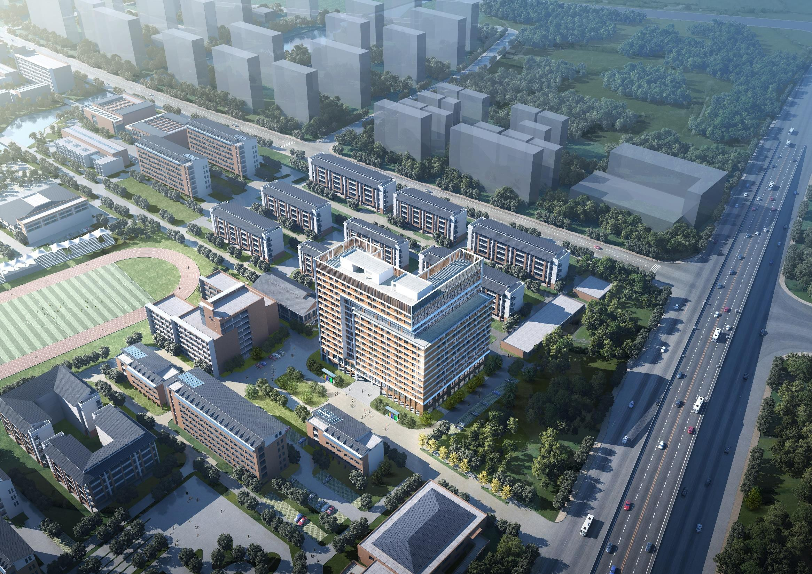
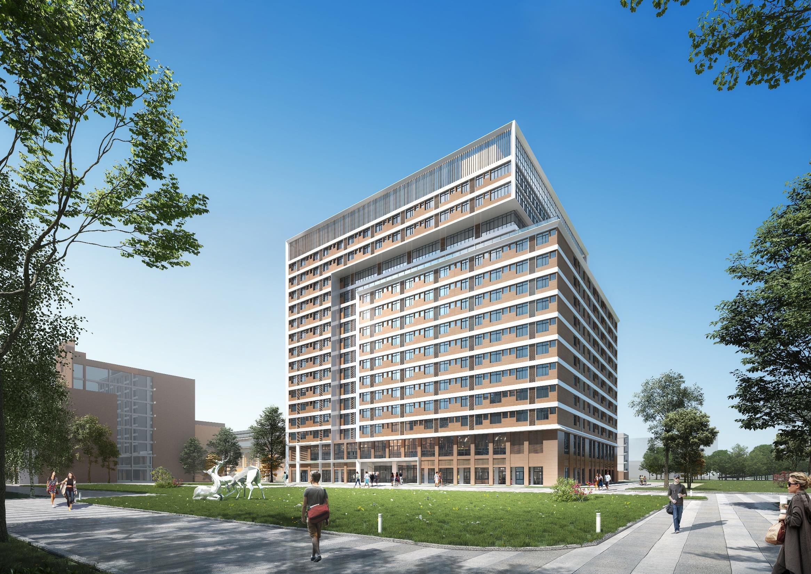

天亨 SKYDOME · 参考素材目录
24 张已实际检查的图片 · 本对话 12 张截图全部归档 · 2026-11-15
杭州四张效果图可用于图片空间交互。长兴资料不用于杭州地图。其余图片仅作设计参考；其中的校园、数字与第三方界面不直接复制。效果图不等于真实三维模型。
campus · 学校校园资料
01_杭州校区_实训基地_透视图.jpg
2400×1350 · 比例 1.778
实训基地人视效果图，主体清晰
适用：建筑详情
是，作为规划效果图实际建成状态、建筑楼层图
02_杭州校区_实训基地_鸟瞰图.jpg
2400×1500 · 比例 1.6
实训基地及光伏雨棚鸟瞰，清晰
适用：总览/地图/协同
是，作为实训片区底图测绘坐标、现状、真实设备部署

03_杭州校区_东校区公寓_鸟瞰图.jpg
2332×1651 · 比例 1.412
东区公寓鸟瞰，公寓/田径场可辨
适用：总览/地图东区视图
是，作为独立东区底图各教学建筑名称、跨年份位置对应

04_杭州校区_公寓_透视图.jpg
2331×1651 · 比例 1.412
公寓透视效果图，清晰
适用：建筑详情
是，作为规划效果图楼层数有冲突，需竣工/现行设计确认

05_长兴校区_东南日景鸟瞰.jpg
1080×764 · 比例 1.414
长兴整体规划鸟瞰，有黑边，中等清晰
适用：其他校区预留
仅资料留存，不用于杭州地图杭州场景不适用

06_长兴校区_实景_主入口.jpg
1920×500 · 比例 3.84
长兴主入口实景，宽幅清晰
适用：其他校区预留
仅资料留存杭州场景不适用

07_长兴校区_实景_综合主楼图书馆.jpg
1920×500 · 比例 3.84
长兴综合主楼实景，宽幅清晰
适用：其他校区预留
仅资料留存杭州场景不适用

08_长兴校区_实景_教学实训楼群.jpg
1920×500 · 比例 3.84
长兴教学实训楼群实景，宽幅清晰
适用：其他校区预留
仅资料留存杭州场景不适用

09_长兴校区_实景_学林湖.jpg
1920×500 · 比例 3.84
长兴学林湖实景，宽幅清晰
适用：其他校区预留
仅资料留存杭州场景不适用

10_学校官方抖音二维码.jpg
100×100 · 比例 1.0
二维码，尺寸小
适用：资料索引
否，不用于地图非空间资料

11_changxing_annotated.png
798×496 · 比例 1.609
长兴带建筑标注鸟瞰，有白边，标签偏小
适用：其他校区预留
否，不用于杭州地图属于长兴，不能混用校区
visual · 数字孪生视觉参考

00_你发的参考图_数字孪生校园.jpg
510×327 · 比例 1.56
通用园区局部，压缩明显
适用：地图告警视觉
否，仅借鉴发光与标记不作为学校空间资料

01_digital_twin_lighting.png
1477×787 · 比例 1.877
通用园区数字孪生大屏，清晰
适用：总览/地图
否，仅参考光影、告警、面板组织真实空间以campus资料为准

02_multidomain_dashboard.png
1440×802 · 比例 1.796
多领域协同大屏，清晰
适用：空天地协同
否，仅参考分组与连接关系不引入油库/港口等无关场景

03_campus_dashboard.png
1400×763 · 比例 1.835
智慧校园大屏，清晰
适用：总览/地图
否，仅参考建筑标签与深蓝光效截图建筑和统计非学校资料

04_campus_command_cockpit.png
1253×747 · 比例 1.677
校园驾驶舱截图，布局清晰，密集小字较模糊
适用：全域态势/设备详情
仅借鉴地图主体、浮动信息卡与层次，不作校园底图真实设备台账、测绘与三维模型仍缺失
ui · 产品UI参考

01_day1_reference.png
1162×683 · 比例 1.701
最初工作台设计参考，界面可辨
适用：全站UI
否，延续深蓝/青色/三栏设计语言不能复制截图中的业务数字与校园

02_situation_layout.png
925×710 · 比例 1.303
全域态势布局草图，清晰
适用：总览/地图
否，仅参考信息层级128/116等截图数字不作为演示数据

03_day1_actual.jpg
1440×900 · 比例 1.6
本项目第一天实际页面，清晰
适用：全站UI
作为产品风格依据，不作背景延续已有字体、颜色、控件

04_task_command_reference.png
1422×816 · 比例 1.743
任务指挥界面，中央主体清晰，小字偏小
适用：任务中心
仅借鉴指标与任务操作层级，不作背景业务数字和品牌以本项目为准
interaction · 交互参考

01_sensor_map_panel.png
1365×787 · 比例 1.734
三维地图图层和传感器面板，文字较小
适用：地图设备详情
否，仅参考图层/趋势/抽屉逻辑采用本项目统一设备数据

02_incident_routes.png
1367×778 · 比例 1.757
城市消防告警和路线，压缩明显
适用：事件详情/巡检
否，仅参考事件列表和路径进度原画面人员、地址、数据不采纳

03_air_ground_dispatch.png
1385×747 · 比例 1.854
空地机器人调度平台，建筑可辨，密集文字偏小
适用：空天地协同
仅借鉴资源分类及任务事件分栏真实校园设备和坐标仍缺失，本期模拟

04_patrol_route_dashboard.png
1482×816 · 比例 1.816
输电线路运检大屏，路线清晰，细字较模糊
适用：巡检路线与结果
仅借鉴路线节点和进度组织，不用其地形真实航线与遥感影像仍缺失，不编造